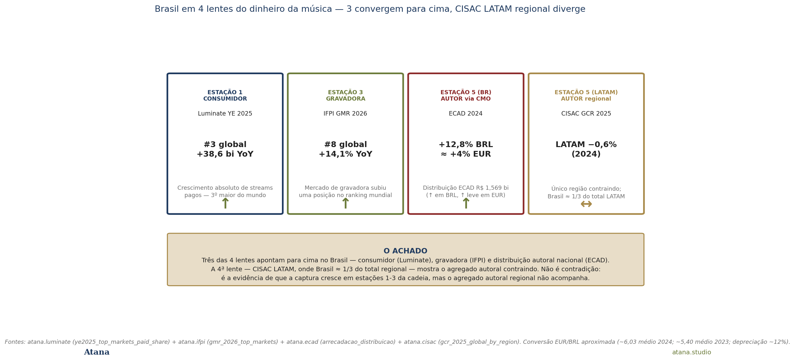
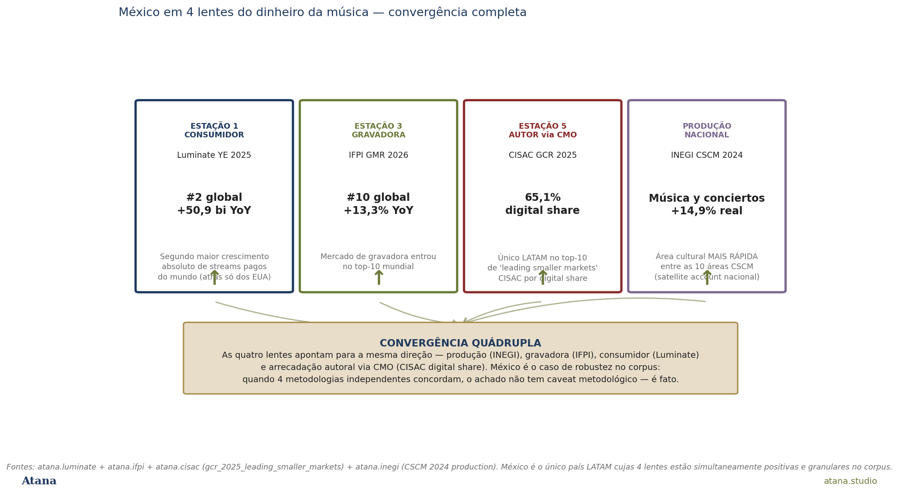
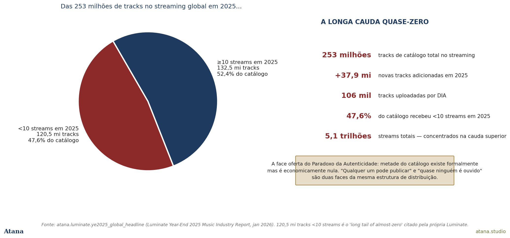

O sinal expandido
A Atana Note #08, publicada em maio, documentou um gap de +17,7 pontos percentuais entre o IFPI LATAM 2025 (+17,1% na receita de gravadora) e a CISAC LATAM 2024 (−0,6% na arrecadação autoral via CMO). A peça argumentou que alguém entre as duas estações da cadeia da música ficou com a diferença — e tomou esse gap como a primeira evidência quantitativa, em escala continental, do Paradoxo da Autenticidade que a Note #06 havia formulado.
Em 4 de junho de 2026, o corpus atana-data ganhou uma quarta lente. O schema atana.luminate, ingerido a partir do Year-End 2025 Music Industry Report da Luminate (a empresa de dados por trás dos charts Billboard), mede a estação 1 da cadeia da música: o que o ouvinte realmente toca, em escala de plataforma, com geografia confiável. Não mede dinheiro — mede streams. Mas streams são o que vira dinheiro nas estações 2 e 3 da cadeia, então a lente da Luminate é a verificação consumer-side independente do que IFPI, CISAC, ECAD e satellite accounts nacionais reportam de outras posições da cadeia.
Esta extensão da Note #08 faz três coisas que a versão original não fazia. Primeira, mostra Brasil em 4 lentes — três apontam para cima, a quarta (CISAC LATAM regional) mostra a divergência. Segunda, mostra México em 4 lentes que apontam todas na mesma direção — o caso de robustez metodológica máxima no corpus. Terceira, traz à mesa um achado-bônus que o Luminate carrega e que a Note #06 ainda não tinha: 47,6% das 253 milhões de tracks no streaming global receberam menos de 10 streams em 2025. É a face supply-side do Paradoxo da Autenticidade — metade do catálogo existe formalmente mas é economicamente nula.
O que muda
A Note #08 original tinha 3 lentes para LATAM: IFPI (label-side global), CISAC (autor/CMO global) e ECAD (autor Brasil). A extensão adiciona Luminate (consumer-side global) e mantém INEGI CSCM (production-side nacional, para o México). O resultado é a tabela de cruzamento abaixo:
| Lente | Estação da cadeia | Brasil 2025 | México 2025 |
|---|---|---|---|
| Luminate YE 2025 | Consumidor (plataforma) | #3 absoluto, +38,6 bi YoY | #2 absoluto, +50,9 bi YoY |
| IFPI GMR 2026 | Gravadora (label) | #8 global, +14,1% | #10 global, +13,3% |
| CISAC GCR 2025 | Autor via CMO | (LATAM −0,6% regional; Brasil ≈ 1/3) | 65,1% digital share (top-10) |
| ECAD 2024 | Autor (BR-only) | distribuição +12,8% BRL ≈ +4% EUR | n/a |
| INEGI CSCM 2024 | Produção nacional | n/a | Música y conciertos +14,9% real |
O Brasil aparece com 4 lentes (Luminate + IFPI + CISAC LATAM regional + ECAD). O México aparece com 4 lentes (Luminate + IFPI + CISAC sub-line + INEGI). Cada país tem sua quadrilha completa, mas as quadrilhas têm composições ligeiramente diferentes — Brasil entra na CISAC como peso regional, México entra na CISAC pela linha de leading smaller markets.
Brasil em 4 lentes
A figura 1 desempacota o caso brasileiro.

Estação 1 — Luminate. O Brasil é o terceiro mercado do mundo em crescimento absoluto de streams pagos em 2025, atrás apenas dos EUA e do México. O número é +38,6 bilhões de streams pagos a mais em 2025 do que em 2024. Para perspectiva: o crescimento brasileiro sozinho representa cerca de 60% do crescimento de toda a fatia LATAM da IFPI, embora o Brasil seja apenas 1/3 do total regional CISAC. A população escutou mais e pagou mais por streaming musical neste último ano.
Estação 3 — IFPI. O Brasil subiu uma posição no ranking global de receita de gravadora, saindo do #9 para o #8. A receita label-side cresceu +14,1% YoY em 2025 — acima da média global (+6,4%) e na faixa que caracterizou a região LATAM como a região que mais cresceu no mundo (+17,1%). As gravadoras locais e as subsidiárias Universal/Sony/Warner Brasil tiveram, em 2025, o melhor ano da década.
Estação 5 — ECAD (autor Brasil). A distribuição ECAD aos titulares brasileiros foi de R\$ 1,569 bilhão em 2024 — crescimento de +12,8% em BRL versus 2023. Em EUR, à câmbio médio anual (~6,03 BRL/EUR em 2024 vs ~5,40 em 2023), o crescimento real fica em torno de +4% — positivo mas mais modesto, porque uma parte do crescimento BRL foi absorvida pela depreciação do real contra o euro.
Estação 5 — CISAC LATAM regional. A CISAC GCR 2025 (que cobre 2024) reporta o agregado regional de coleta autoral em € 786 milhões, −0,6% YoY — única região do mundo contraindo. O Brasil, com seus ~€ 260 milhões, é aproximadamente 1/3 desse total. Como o Brasil cresceu enquanto o total LATAM caiu, o "não-Brasil LATAM" precisa ter contraído mais agressivamente — algo em torno de −3% em EUR, por simples decomposição algébrica (analítica detalhada na Análise 24 §5).
O achado da figura 1: três lentes apontam para cima no Brasil. A quarta (CISAC LATAM regional) aponta de lado — não porque o Brasil dentro do agregado tenha caído, mas porque o agregado regional inclui países onde a coleta autoral está em queda mais aguda. A divergência da Note #08 original não é um efeito de medição; é um efeito de composição regional, e o Brasil é o polo positivo, não o negativo, dessa composição.
México em 4 lentes — o caso de convergência
A figura 2 desempacota o caso mexicano.

Estação 1 — Luminate. O México é o segundo mercado do mundo em crescimento absoluto de streams pagos em 2025, atrás apenas dos EUA. O +50,9 bilhões de streams pagos é maior do que o crescimento brasileiro e maior do que o crescimento alemão. O México não tem a escala absoluta de mercado dos EUA, mas tem velocidade comparável.
Estação 3 — IFPI. O México subiu para a #10 posição global no ranking de receita de gravadora em 2025, com +13,3% YoY. Pela primeira vez na década, dois países LATAM estão no top-10 mundial (Brasil #8, México #10).
Estação 5 — CISAC. A CISAC GCR 2025 lista o México na sua tabela de "leading smaller markets" por digital share — 65,1% das coletas autorais já são digitais, fazendo do México o único país LATAM no top-10 dessa lista. Aqui a CISAC mede o México como entrada granular, não como peso de agregado regional, então o sinal não está contaminado pelo declínio agregado LATAM.
Produção nacional — INEGI CSCM 2024. A INEGI publica, via Cuenta Satélite de la Cultura de México, a contabilidade de produção cultural mexicana por 10 áreas. Em 2024, Música y conciertos foi a área cultural mais rápida do país — crescimento real de +14,9%. Mais rápida não só do que as outras áreas culturais (artes visuais, artes escénicas, audiovisual, etc.) como também acima da economia mexicana em geral.
O achado da figura 2: convergência quádrupla. Quatro metodologias diferentes (produção nacional + receita label + arrecadação autoral CMO + consumo plataforma), quatro ângulos diferentes da economia musical, e todas as quatro apontam na mesma direção positiva. Quando isso acontece, o achado não tem caveat metodológico — é fato. O México viveu um boom musical robusto em 2024-2025, e o boom é capturado consistentemente em cada uma das estações que conseguimos medir. Isso é raro no corpus; geralmente as lentes divergem em algum ponto. O México é o caso de robustez máxima.
A geografia do paradoxo da autenticidade — Brasil 75,2% local repertoire
Há outra coisa que a Luminate revela e que reforça a tese da Note #06 (Paradoxo da Autenticidade). Na tabela ye2025_most_local_markets, o Brasil aparece como o segundo país do mundo onde o repertório local mais domina o streaming: 75,2% das streams brasileiras em 2025 são de repertório em português brasileiro — sertanejo, funk, MPB, pagode, gospel.
Só a Índia está à frente (79,2%). Turquia (69,9%) e Nigéria (62,2%) completam o top-4.
Esse número fecha um arco que a Note #06 começou. Em 2025: - 3 em cada 4 streams no Brasil são de repertório nacional brasileiro - O mesmo Brasil é o #3 do mundo em crescimento absoluto de streams pagos (Luminate) - O mesmo Brasil é o #8 do mundo em receita de gravadora (IFPI) - O mesmo Brasil distribui via ECAD R\$ 1,57 bilhão a 345 mil titulares (média R\$ 383/mês por titular) - O mesmo Brasil está dentro do agregado LATAM CISAC que contrai 0,6% no ano
O Funk brasileiro, o sertanejo, o pagode, o gospel — os gêneros que constituem essa hegemonia de 75,2% no streaming brasileiro — são exatamente os gêneros que a Análise 19 mostrou capturando 0% (Funk, Pagode, Axé), 0,1% (Hip-Hop), 5,8% (Sertanejo) da Lei Rouanet, enquanto a Música Erudita capta 49,9%. A face plataforma do sucesso é total; a face fomento é nula; a face autoral nacional cresce em BRL mas perde para a depreciação cambial; a face autoral regional contrai. O Paradoxo da Autenticidade não é mais hipótese — é um sistema de medições convergentes em quatro lentes.
A face supply-side — 47,6% do catálogo não é ouvido
A figura 3 traz um achado bônus do Luminate Year-End 2025 que não estava na Note #06 nem na Note #08 original.

A Luminate reporta que, ao fim de 2025, havia 253 milhões de tracks disponíveis nas plataformas de streaming global. Em 2025 sozinho, +37,9 milhões de tracks novas foram adicionadas — uma média de 106 mil tracks uploadeadas por dia.
Desse catálogo de 253 milhões de tracks, 120,5 milhões (47,6%) receberam menos de 10 streams em 2025. Quase metade do catálogo é, na expressão da própria Luminate, "the long tail of almost-zero" — a longa cauda quase-zero.
Esse achado é a face oferta do Paradoxo da Autenticidade que as Notes #06 e #08 documentaram pela ótica da demanda e da remuneração. A retórica de plataforma — "qualquer um pode publicar, a democratização chegou" — convive com o fato estatístico de que metade do catálogo existe formalmente mas é economicamente nula. O dinheiro não está distribuído na cauda; está concentrado no topo. "Qualquer um pode publicar" e "quase ninguém é ouvido" são duas faces da mesma estrutura de distribuição.
Para política pública, esse achado tem dois usos. Primeiro, contextualiza a leitura da Note #06: o Funk brasileiro que explode no Spotify, o sertanejo que enche playlists — esses são, comparativamente, tracks na cauda superior do catálogo de 253 milhões. A categoria "música nova publicada" não se traduz mecanicamente em "música ouvida". Segundo, abre questão regulatória: como tratar o catálogo nulo? Os 120 milhões de tracks com <10 streams pagam licenciamento por consumo (porque o consumo é ~zero), ocupam armazenamento e indexação das plataformas, e contribuem para o ruído algorítmico que dificulta a descoberta do que é ouvido — o que é a outra metade da estrutura.
Implicações
Para o Ministério da Cultura do Brasil: o achado da convergência tripla Brasil (Luminate + IFPI + ECAD) confirma que a economia musical brasileira viveu um ciclo positivo robusto em 2024-2025. A divergência só aparece quando se olha o agregado LATAM CISAC, que carrega o peso de outros países regionais. A política pública brasileira de fomento musical (Lei Rouanet, Aldir Blanc, editais setoriais) opera, hoje, sobre um setor em crescimento de demanda interna — não sobre um setor em contração. A justificativa para reforma da política não pode ser "a música brasileira está em crise"; precisa ser "a captura de valor não chega aos criadores periféricos" (achado da Análise 19) e "a estrutura de distribuição tem cauda zero" (achado desta extensão).
Para o Ministério da Cultura do México: a convergência quádrupla é uma vitória de comunicação institucional. Quatro lentes independentes apontam para o boom musical mexicano. Para órgãos internacionais (BID, UNESCO, OEI) que avaliam políticas culturais comparativas, o México de 2024-2025 é o caso mais robustamente positivo do continente.
Para multilaterais: a extensão da Note #08 com Luminate dá um instrumento adicional para análise comparativa LATAM. UNCTAD reporta comércio de bens criativos; UNESCO FCS reporta domínios culturais; CISAC reporta arrecadação autoral; IFPI reporta receita label; Luminate reporta consumo de plataforma. Cinco fontes globais sobre o mesmo fenômeno musical, com calendários de publicação distintos. A leitura cross-source é a contribuição metodológica que a Atana entrega.
Para regulação de IA generativa: o achado do catálogo saturado (47,6% das tracks <10 streams) tem implicação direta. Os datasets de treinamento de Suno, Udio e similares vêm de catálogos comerciais — e o catálogo comercial é dominado pela cauda inferior em volume e pelo topo em escuta. O catálogo que treina IA é predominantemente música pouco ouvida, o que pode produzir modelos que reproduzem mediania por construção. Tese verificável; não a verificamos aqui.
O que estamos olhando a seguir
- Luminate State of the Industry 2026 (deck de maio 2026, PDF auth-walled) — Tier 2 da Luminate. Extensão da série para H1 2026.
- Luminate Brazil report dedicado — se existir publicação específica BR, ela teria detalhe gênero × país que o Year-End global não traz, e poderia dar a fatia Funk × Sertanejo × Pagode × Gospel × MPB × Outros que ainda falta no corpus.
- CISAC GCR 2026 (previsto novembro 2026) — quando estiver no ar, podemos comparar a janela LATAM-2025 na mesma fonte com IFPI-2025 e Luminate-2025; se a divergência persiste, o achado se consolida.
- OECD AI Papers 59 + 60 (já ingeridos em
atana.oecd_aina mesma Phase 5c) — moldura metodológica do Atana Index Vol. 2. A extensão desta Note #08 com Luminate pode informar o capítulo musical do Vol. 2.
Fontes
- Luminate. Year-End 2025 Music Industry Report, January 2026. https://luminatedata.com/reports/yearend-music-industry-report-2025. Ingerido em
atana.luminate.ye2025_*em junho 2026 (Phase 5c). - Music Business Worldwide. Coverage of the Luminate Year-End 2025 Report, 22 January 2026. https://www.musicbusinessworldwide.com.
- IFPI. Global Music Report 2026, March 2026. Cobre dados 2025. Ingerido em
atana.ifpi.gmr_2026_*(Phase 5b, maio 2026). - CISAC. Global Collections Report 2025, November 2025. Cobre dados 2024. Ingerido em
atana.cisac.gcr_2025_*(Phase 5a, maio 2026). - ECAD. Relatório Anual 2024 (versão-mercado) e Relatório Anual 2025. Ingerido em
atana.ecad.*(Phase 4c, maio 2026). - INEGI. Cuenta Satélite de la Cultura de México (CSCM), boletín 2024. Ingerido em
atana.inegi.*(Phase 3a + Phase 5b expansão). - Atana Note #06 — Spotify × IFPI × UNCTAD: o Funk brasileiro e o Paradoxo da Autenticidade (maio 2026).
- Atana Note #08 — As duas lentes do dinheiro da música em LATAM 2025 (maio 2026). A peça original que esta extensão estende.
- Atana Análise 19 — Funk e sertanejo: a geografia da captura (maio 2026).
- Atana Análise 24 — Brasil no mapa global da renda autoral (maio 2026).